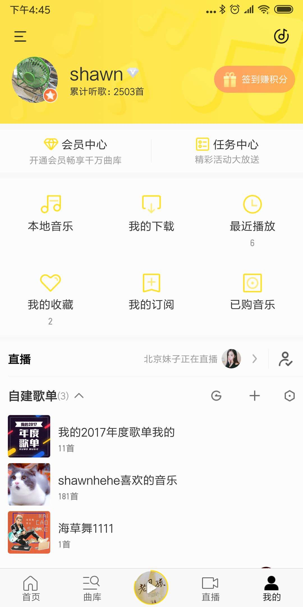

• 我的页，产品对其主要定位是“承载用户在酷我的数字资产”的页面
• 消息中心，是酷我官方，酷我用户，与用户个体交流的一个重要的数字资产承载模块。消息中心在我的页露出是逻辑自洽的
• 各运营团队，在日常运营过程中，都普遍存在一个问题——消息中心打开率太低。
其原因主要在于侧边栏的打开率较低（18.6% 安卓上周数据）
相较于我的页的打开率（41.4% 安卓上周数据）
需求背景
需求描述


我的页

在我的页导航栏下方，增加一个消息中心的入口。
• 红点逻辑：消息中心入口上的红点逻辑，与现在侧边栏的保持一致即可
• 我的页底部红点逻辑：我的页底部红点，不关联消息中心入口的逻辑，即：不论消息中心是否有未读消息，我的页底部红点都当做没有未读消息，不影响原有的红点逻辑
•数据埋点
mta埋点，事件名为 mine_ message
逻辑描述